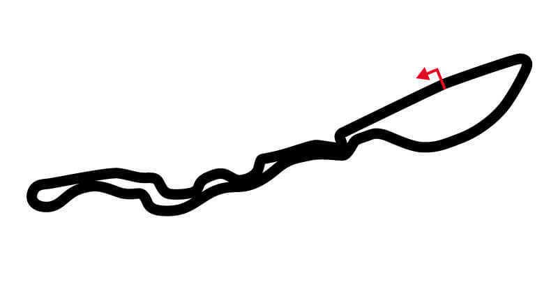
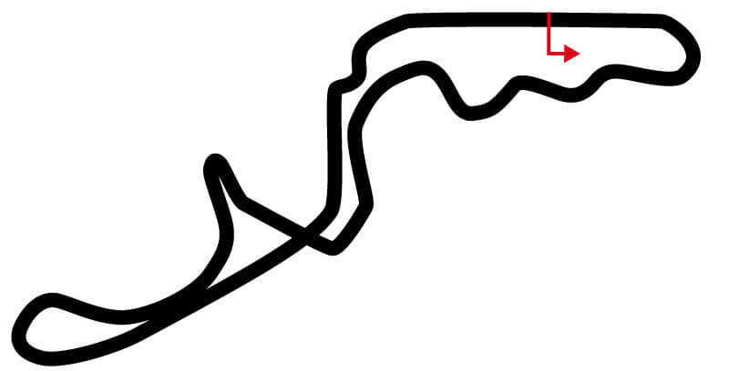
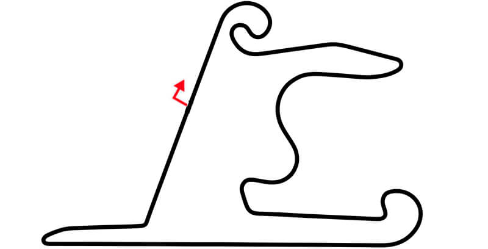
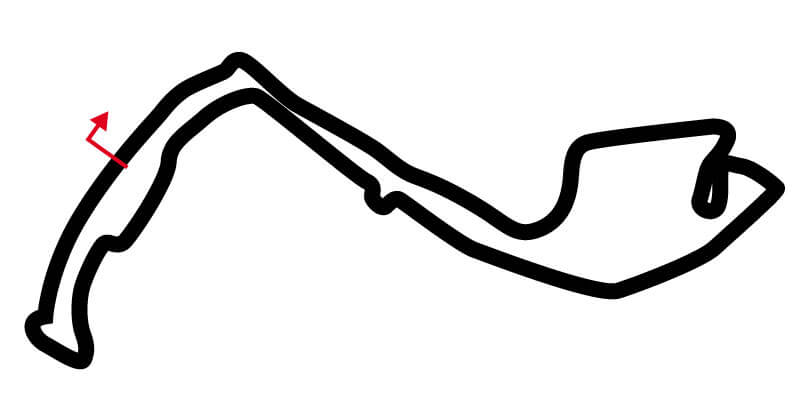

SAKHIR
SAKHIR
CIRCUITO: Sakhir
LONGITUD: 6299 metros
CURVAS: 15 (6 izda | 9 dcha)
RÉCORD: Pedro de la Rosa - 1:31.447 - Año: (2005)
GANADOR 2023: Max Verstappen
POLE 2023: Max Verstappen
x
JEDDAH INTERNATIONAL STREET CIRCUIT
CIRCUITO: Jeddah International Street Circuit
LONGITUD: 5154 metros
CURVAS: 27 (16 izda | 11 dcha)
RÉCORD: Lewis Hamilton - 1:30.734 - Año: (2021)
GANADOR 2023: Sergio Pérez
POLE 2023: Sergio Pérez
x
 ALBERT PARK
ALBERT PARK
CIRCUITO: Albert Park
LONGITUD: 5303 metros
CURVAS: 14 (6 izda | 8 dcha)
RÉCORD: Sergio Pérez - 1:20.235 - Año: (2023)
GANADOR 2023: Max Verstappen
POLE 2023: Max Verstappen
x
SUZUKA
CIRCUITO: Suzuka
LONGITUD: 5807 metros
CURVAS: 18 (9 izda | 9 dcha)
RÉCORD: Lewis Hamilton - 1:30.983 - Año: (2019)
GANADOR 2023: Max Verstappen
POLE 2023: Max Verstappen
x
SHANGHAI
CIRCUITO: Shanghai
LONGITUD: 5451 metros
CURVAS: 16 (6 izda | 10 dcha)
RÉCORD: Michael Schumacher - 1:32.238 - Año: (2004)
GANADOR 2019: Lewis Hamilton
POLE 2019: Valtteri Bottas
x
 HARD ROCK STADIUM CIRCUIT
HARD ROCK STADIUM CIRCUIT
CIRCUITO: Hard Rock Stadium Circuit
LONGITUD: 0 metros
CURVAS: 19 (11 izda | 8 dcha)
RÉCORD: Max Verstappen - 1:29.708 - Año: (2023)
GANADOR 2023: Max Verstappen
POLE 2023: Sergio Pérez
x
 IMOLA
IMOLA
CIRCUITO: Imola
LONGITUD: 0 metros
CURVAS: 10 (9 izda | 10 dcha)
RÉCORD: Lewis Hamilton - 01:15.484 - Año: (2020)
GANADOR 2023:
POLE 2023:
x
MONTECARLO
CIRCUITO: Montecarlo
LONGITUD: 3340 metros
CURVAS: 19 (9 izda | 10 dcha)
RÉCORD: Lewis Hamilton - 1:12.909 - Año: (2021)
GANADOR 2023: Max Verstappen
POLE 2023: Max Verstappen
x
 BARCELONA CATALUNYA
BARCELONA CATALUNYA
CIRCUITO: Catalunya
LONGITUD: 4627 metros
CURVAS: 16 (8 izda | 8 dcha)
RÉCORD: Max Verstappen - 1:16.330 - Año: (2023)
GANADOR 2023: Max Verstappen
POLE 2023: Max Verstappen
x
 SILVERSTONE
SILVERSTONE
CIRCUITO: Silverstone
LONGITUD: 5141 metros
CURVAS: 18 (8 izda | 10 dcha)
RÉCORD: Max Verstappen - 1:27.097 - Año: (2020)
GANADOR 2023: Max Verstappen
POLE 2023: Max Verstappen
x